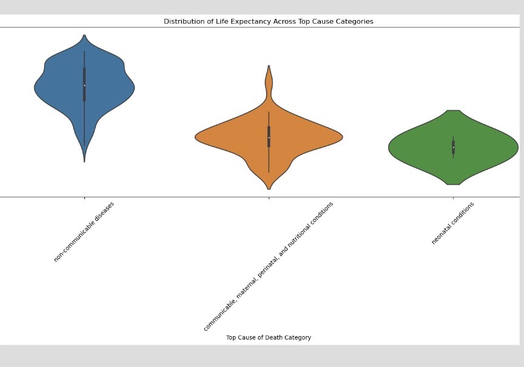

Business management Reaseach Paper Marketing strategy for the launch of food products in the US market ● Conducted market research of the US international food industry to evaluate a marketing plan ● Reviewed their current sales and financial data to select the best products for their launch
